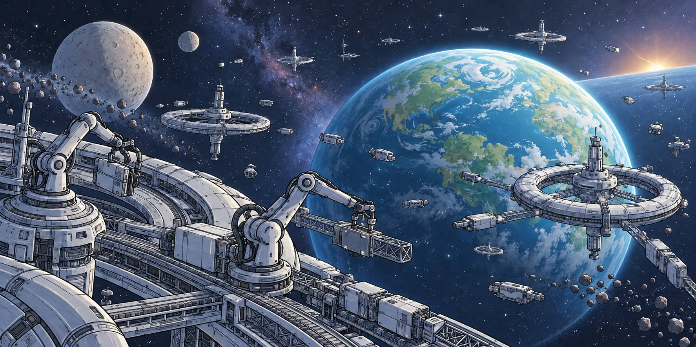

02 / READING NOTES
The space
between lines.
A poem is a lossy compression. Feelings, thoughts, worries, joys, concerns, all packed in a few words. A trace. The decompression is in the mind of the reader, informed by their own subjective thoughts, worries, joys, concerns, fears. Sometimes they resonate, sometime they don't. When they do, the reader feels understood. When they seem to clash, it raises negative emotions such as panic, disgust, angriness.
THE EXPLANATIONS BELOW ARE THE AUTHOR'S WORDS. THE LINE LINKS ARE EDITORIAL.
Select a numbered verse or a note to follow its connections.Tap a numbered verse. Its reading notes open directly beneath it.
THE TEXT
AUTHOR’S NOTES01 — 08
Browse all eight reading notes
